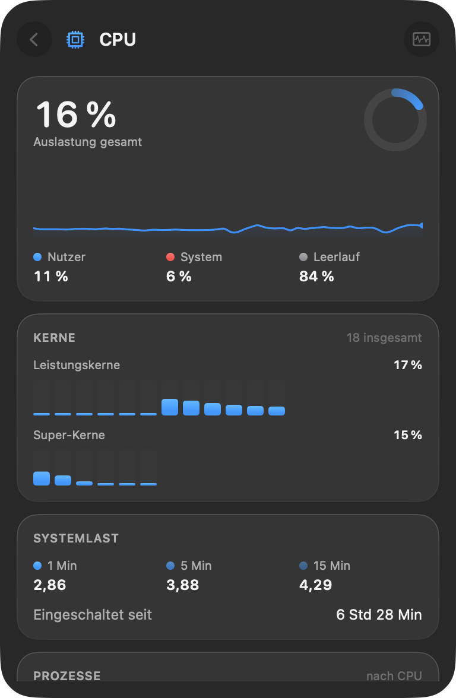
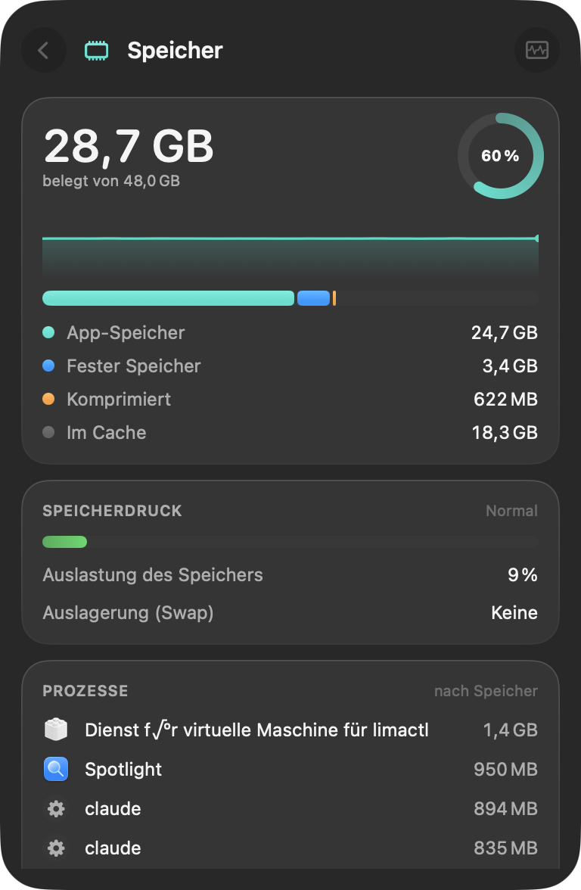
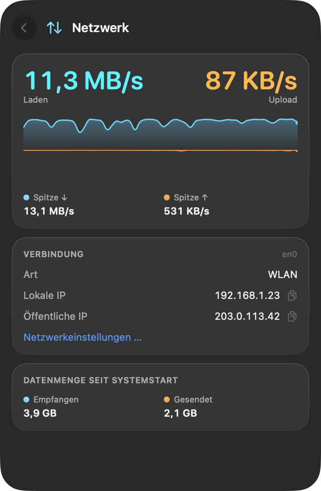
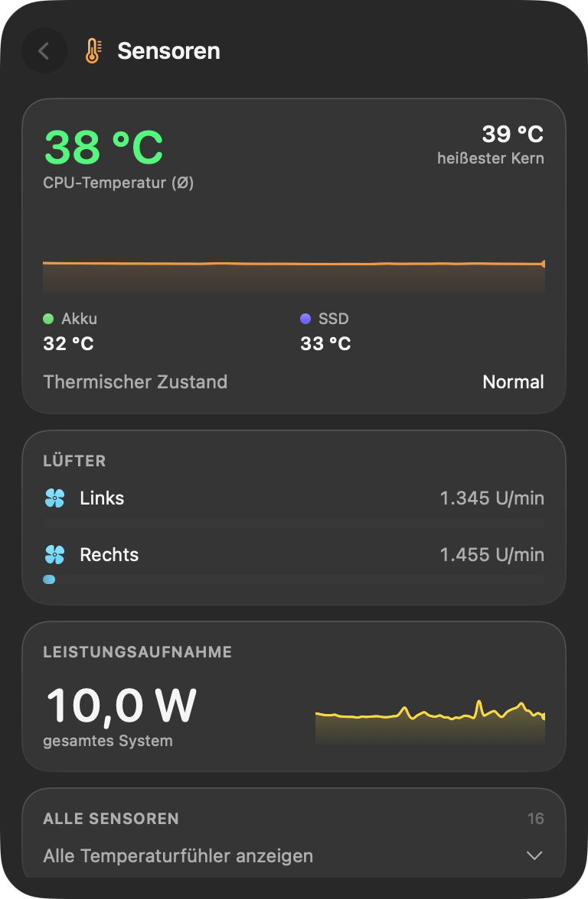
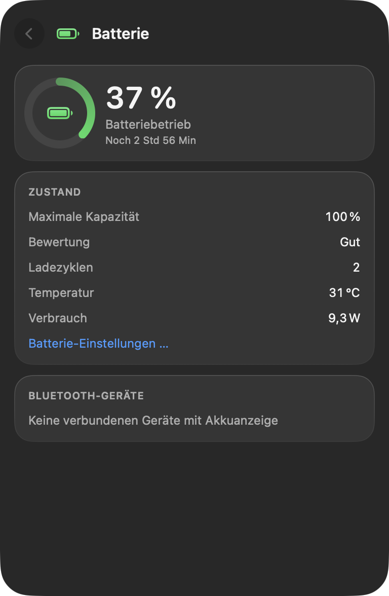
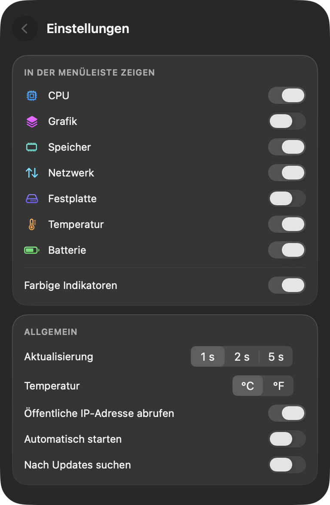

Dein Mac auf einen Blick.
Puls sitzt in der Menüleiste und zeigt, was dein Mac gerade tut: Prozessor, Grafik, Speicher, Netzwerk, Festplatte, Thermik und Akku. Ein Klick öffnet die Details.

Jeder Bereich deines Mac, einen Klick tiefer.
Jede Kachel öffnet eine Detailansicht mit Verlauf, den Zahlen dahinter und was sie bedeuten.






Gemacht, um nicht zu stören.
Leicht für deinen Mac
Puls misst alle zwei Sekunden und braucht dabei deutlich unter einem Prozent eines einzigen Kerns.
Privat von Grund auf
Kein Konto, keine Analyse, keine Werbung. Deine Messwerte verlassen deinen Mac nicht.
Zu Hause auf Tahoe
Gebaut mit SwiftUI und Liquid Glass, auf Deutsch und Englisch, in Hell und Dunkel.
Zwei Wege zu Puls.
Beide sind kostenlos. Die App-Store-Version läuft in Apples Sandbox, die Sensoren und andere Apps abschirmt, deshalb zeigt sie etwas weniger.
| GitHub | Mac App Store | |
|---|---|---|
| Prozessor, Grafik, Speicher, Netzwerk, Festplatte, Batterie | Enthalten | Enthalten |
| Thermischer Zustand, Leistungsaufnahme, Akku-Temperatur | Enthalten | Enthalten |
| CPU- und Chip-Temperaturen, Lüfter | Enthalten | Nicht verfügbar |
| Aktivste Prozesse | Enthalten | Nicht verfügbar |
| Akkustände von AirPods | Enthalten | Nicht verfügbar |
| Updates | Hinweis im Panel | Automatisch |
| Signiert durch | Developer ID, von Apple notarisiert | Mac App Store |
Bitte nur eine der beiden installieren. Beide heißen Puls.
Fragen
Wo ist Puls, nachdem ich es geöffnet habe?
Puls lebt in der Menüleiste und hat kein Dock-Symbol. Die Werte stehen oben rechts auf dem Bildschirm; ein Klick öffnet das Panel, ein Rechtsklick ein kleines Menü.
Wie beende ich Puls?
Rechtsklick auf die Puls-Anzeige und Puls beenden wählen, oder im Panel die Einstellungen öffnen und auf Beenden klicken.
Startet Puls mit meinem Mac?
Die GitHub-Version ab dem ersten Start, die App-Store-Version fragt vorher. Ändern kannst du das jederzeit in den Einstellungen unter Beim Anmelden starten.
Welche Sprachen spricht Puls?
Deutsch und Englisch. Puls folgt der Sprache in den Systemeinstellungen unter Allgemein, Sprache und Region.
Ist Puls wirklich kostenlos?
Ja. Puls ist Open Source unter der MIT-Lizenz, ohne Werbung, Abo oder In-App-Käufe.